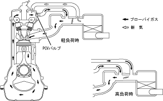

| ブローバイガス還元装置 |
| ● |
HCを大量に含むブローバイガスを強制的に吸気系に導入して再燃焼させ，エミッション性能の向上をはかります。運転状態に応じたブローバイガス還元量に制御することにより，オイル持ち去り量の低減，アイドリングの低回転化をはかりました。
|
| ● |
PCV(Positive Crankcase Ventilation)バルブ側の通路はインテークマニホールドの負圧に応じ，スロットルバルブ下流へブローバイガスを還元します。
|
| ● |
シリンダーヘッドカバーからスロットルバルブ上流への通路は，軽負荷時には新気を導入してクランクケース内の空気浄化性を高め，高負荷時にはインテークマニホールドの負圧により，PCV側の通路と合わせてブローバイガスを還元します。
|
|  |